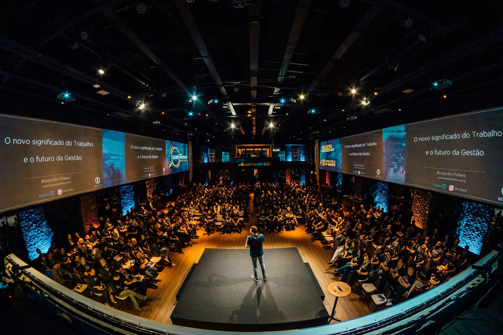
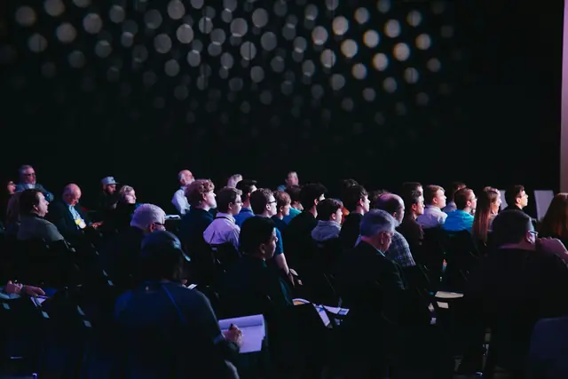
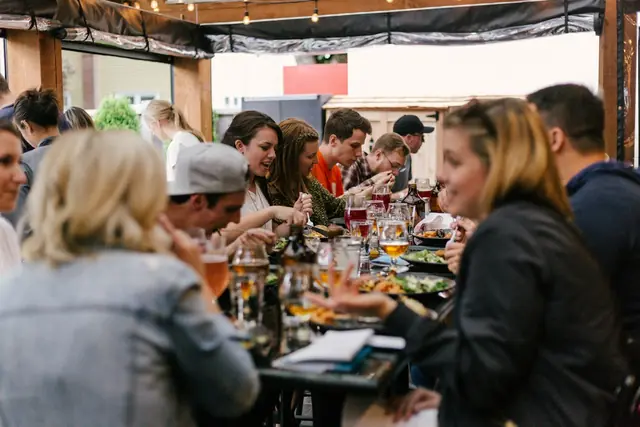
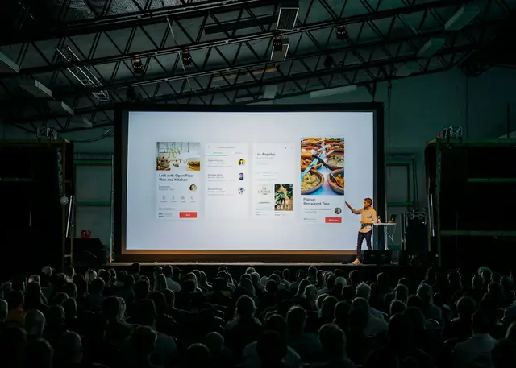

Individual
R$ 129
1 pessoa
- Palestras e painel aberto
- Almoço e dois cafés
- Guias de 1 página por e-mail

Sábado · 5 dez 2026 · Curitiba
Saia com a ferramenta pronta, não com o slide. Um dia de tecnologia sem jargão para quem toca negócio pequeno: seis palestras, um painel aberto e uma tarefa de segunda-feira por palestra.
O Forja é para quem é o time inteiro: atende, vende, cobra e ainda precisa decidir qual sistema contratar. Quatro regras seguram o dia.
O palestrante explica como se estivesse no balcão do seu cliente. Sigla só entra depois de traduzida.
Toda palestra termina com uma ação de até 1 hora para fazer na segunda-feira, às 9h. Está impressa na programação.
Plateia de donos e donas de pequeno negócio. No almoço, as mesas são por segmento: comércio, serviço, alimentação, saúde.
Um guia de uma página por palestra chega no seu e-mail em até 5 dias. Não gravamos o evento: quem está na sala é quem pergunta.
Uma sala só. Você não precisa escolher entre duas palestras boas e perder uma.
Equipe Forja
Letícia Arruda · especialista em busca local
Segunda, 9h Revisar a ficha do negócio e responder as 10 últimas avaliações.
Heitor Zanella · consultor de processos
Segunda, 9h Listar o que você controla de cabeça e escolher onde isso vai passar a viver.
Mateus Brandão · atendimento digital
Segunda, 9h Montar 5 respostas prontas e uma etiqueta para cada etapa da conversa.
Incluso no ingresso
Caio Nakamura · automação para pequenas equipes
Segunda, 9h Escolher a tarefa repetida que mais irrita e desenhá-la em 5 passos.
Priscila Dornelles · produto e atendimento
Segunda, 9h Separar as 20 perguntas mais comuns e marcar quais podem ter resposta automática.
Rosana Pelissari · segurança da informação
Segunda, 9h Ligar a verificação em duas etapas no e-mail e no banco, e testar um backup.
Perguntas enviadas na hora, pelo celular ou em papel
Até 18h30
Nenhuma palestra nesse tema. Escolha outro.
Nada de keynote de palco gigante. Cada um fala de algo que já aplicou em empresa de até 20 pessoas.
Nomes e cargos fictícios. As fotos são de banco de imagens e não mostram as pessoas citadas.



Um antigo galpão de oficina reformado, com pé-direito alto, rampa de acesso e banheiros adaptados.
Mapa ilustrativo, desenhado para este projeto. Não representa ruas reais.
Almoço, dois cafés, guias em PDF e a mesa do seu segmento estão em todos os ingressos.
R$ 129
1 pessoa
R$ 297R$ 387
R$ 99 por pessoa · economiza R$ 90
R$ 65
Estudantes e professores · comprovante na entrada
Preços de exemplo. A inscrição abaixo é uma simulação: nada é cobrado nem enviado.
Cancele até 28 de novembro e receba 100% de volta, sem perguntar o motivo.
Se até o almoço você achar que não valeu, fale com a equipe na porta. Devolvemos o valor na hora.
“Fiz a tarefa de segunda e no mesmo dia minha loja respondia no WhatsApp com mensagem pronta. Parece pouco, mas tirou uma hora do meu dia.”
“Eu esperava palestra de empresa grande. Foi o contrário: tudo cabia na minha realidade de três funcionários.”
“O almoço por segmento valeu o ingresso. Saí com dois contatos de quem resolve o mesmo problema que eu.”
Depoimentos de exemplo, escritos para este projeto. Pessoas, negócios e resultados fictícios; não houve edição anterior.
Todas as marcas acima são inventadas para este projeto.
Não. O evento foi pensado para quem usa o celular e o computador no trabalho, mas nunca estudou o assunto. Siglas aparecem traduzidas.
Não. Preferimos que a sala converse. Em até 5 dias úteis, você recebe por e-mail um guia de uma página por palestra, com os passos e os links citados.
Por e-mail, com um código para mostrar na entrada, no celular ou impresso. Quem comprar o time de 3 recebe os três códigos no mesmo e-mail.
Pode, até 2 dias antes do evento, respondendo ao e-mail do ingresso com o nome da nova pessoa. A meia só vale para quem apresentar o comprovante.
Sim, temos opções vegetarianas, sem glúten e sem lactose. Avise até 28 de novembro, respondendo ao e-mail do ingresso.
No projeto real seria cartão, Pix ou boleto. Aqui a inscrição é uma simulação: nenhum dado é enviado e nada é cobrado.
O galpão é fictício, mas no desenho do evento ele fica a poucos minutos a pé de ponto de ônibus, com bicicletário na entrada e estacionamento conveniado ao lado.
Lote 2 a R$ 129 até 22 de novembro ou até acabarem as 120 vagas. Cancelamento grátis até 7 dias antes.
Ingresso
Inscrição de mentira, mas o final é de verdade: é assim que o ingresso apareceria. Nenhum dado saiu do seu navegador.